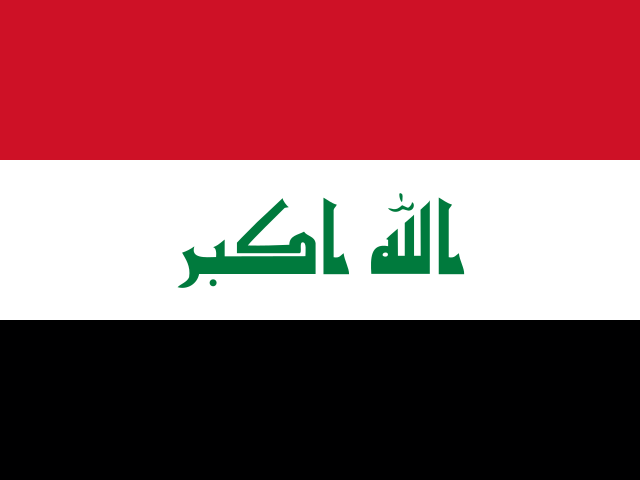
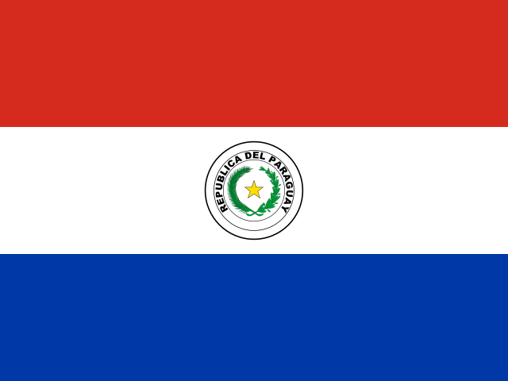

🏆 北中米ワールドカップ2026 出場国
 フランス代表 招集メンバー26人 & 全試合結果
フランス代表 招集メンバー26人 & 全試合結果
2026 FIFAワールドカップ（アメリカ・カナダ・メキシコ共催）のフランス代表 招集メンバー26人と、グループステージ〜決勝トーナメントの全試合結果です。Squad XI（スカッドイレブン）なら、この26人でスタメンを組んで画像でSNSに共有できます。
フランス代表のスタメンを組む（無料・登録不要）→全試合結果（グループI・R32・R16）
| ラウンド | 対戦相手 | スコア | 結果 |
|---|---|---|---|
| グループI 第1節 | 3 - 1 | ○ | |
| グループI 第2節 |  イラク | 3 - 0 | ○ |
| グループI 第3節 | 4 - 1 | ○ | |
| ラウンド32 | 1 - 0 | ○ | |
| ラウンド16 |  パラグアイ | 1 - 0 | ○ |
ラウンド16を突破してベスト8（準々決勝）に進出しました（5勝0分0敗）。※準々決勝以降はラウンド16終了時点で未実施です。 スコアはフランスから見た表記です。
招集メンバー26人
GK
| Mike Maignan | AC Milan |
| Brice Samba | Rennes |
| Robin Risser | Lens |
DF
| Lucas Digne | Aston Villa |
| Malo Gusto | Chelsea |
| Lucas Hernandez | Paris Saint-Germain |
| Theo Hernandez | Al-Hilal |
| Ibrahima Konaté | Liverpool |
| Jules Koundé | Barcelona |
| Maxence Lacroix | Crystal Palace |
| William Saliba | Arsenal |
| Dayot Upamecano | Bayern Munich |
MF
| N'Golo Kanté | Fenerbahçe |
| Manu Koné | AS Roma |
| Adrien Rabiot | AC Milan |
| Aurélien Tchouaméni | Real Madrid |
| Warren Zaïre-Emery | Paris Saint-Germain |
FW
| Maghnes Akliouche | Monaco |
| Bradley Barcola | Paris Saint-Germain |
| Rayan Cherki | Manchester City |
| Ousmane Dembélé | Paris Saint-Germain |
| Désiré Doué | Paris Saint-Germain |
| Jean-Philippe Mateta | Crystal Palace |
| Kylian Mbappé ※主将 | Real Madrid |
| Michael Olise | Bayern Munich |
| Marcus Thuram | Inter Milan |
出典：招集メンバー26人（worldcuppass）／試合結果（Wikipedia）。所属クラブは大会時点。
この26人でスタメンを組む
Squad XIで国籍から「フランス」を選ぶとフランスの選手が市場価値順に並びます。上記の招集メンバーで4-2-3-1や4-3-3を組んで、あなたの考える最強スタメンを画像で共有しましょう。W杯ベストイレブン作りもおすすめです。
フランス代表XIを作る →